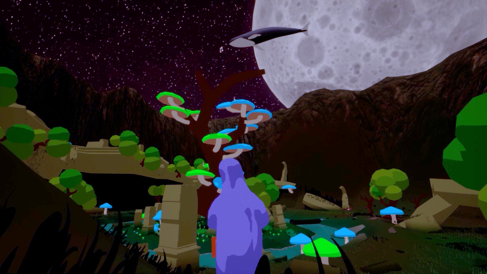
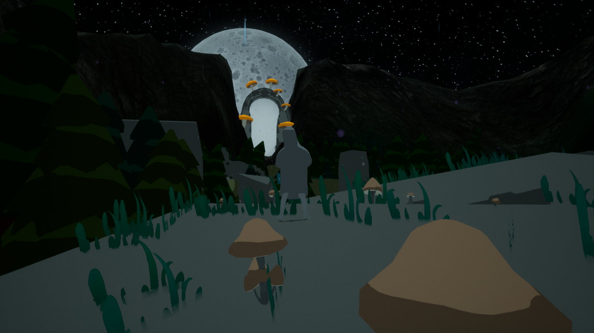
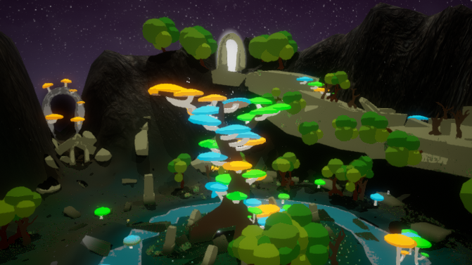
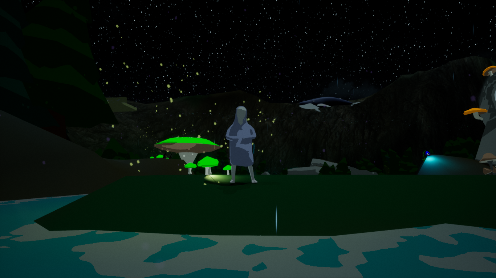

SONANCE
A short aesthetic experience done in 6 days by a team of 5, done for the 4th
interdisciplinary week of the Polytechnic Institute of Bragança.
The project developed was about a little child who was lost in the woods
with a cassette player. With the power of imagination and the emotions felt
through the songs listened, the environment was able to change and help the
child find a way home. In a mystical forest full of creatures to explore with a
beautiful cel shading aesthetic, with great soundtrack to relax to, the player can
experience a calming time.
I was the team's programmer and VFX/Shader artist. My main focus was to dive deeper
into UE4, exploring a variety of systems. After the main mechanic was done (activating
platform pieces depending on which music is playing), I dwelled in the Niagara system
to simulate schools of birds, did cel shading and also virtual textures so that a
block would have a gradient between the ground color and it's color depending on
it's height to the floor, particle system to enrich the enviroment with fireflies
and dust and level transitions.




All copyrights reserved by Gonçalo Pinto 2021©